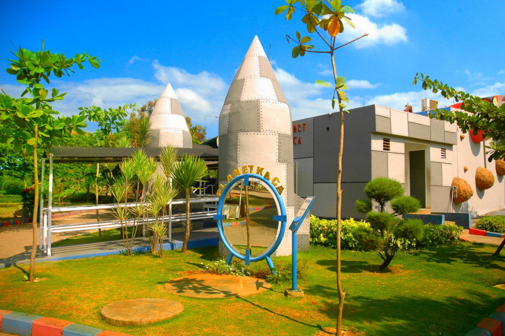
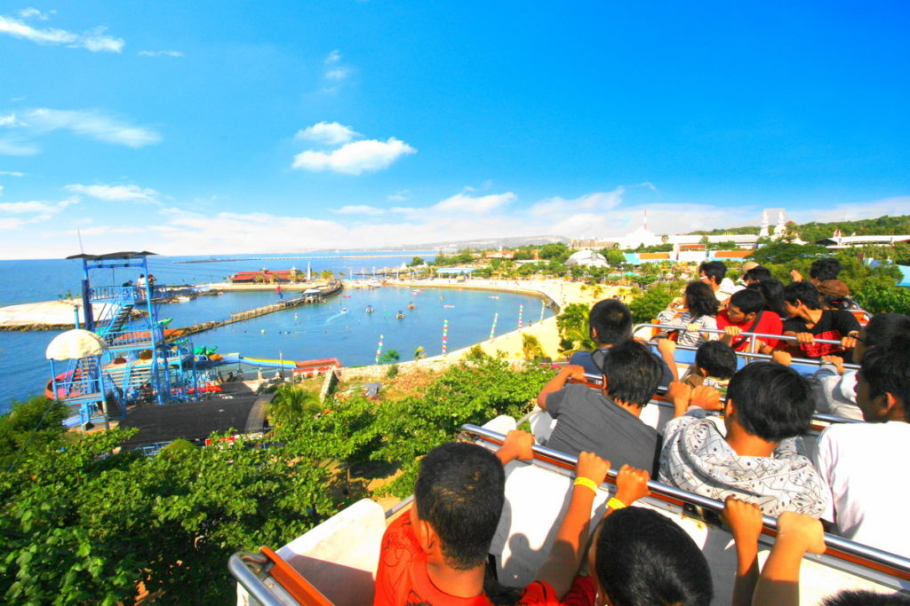
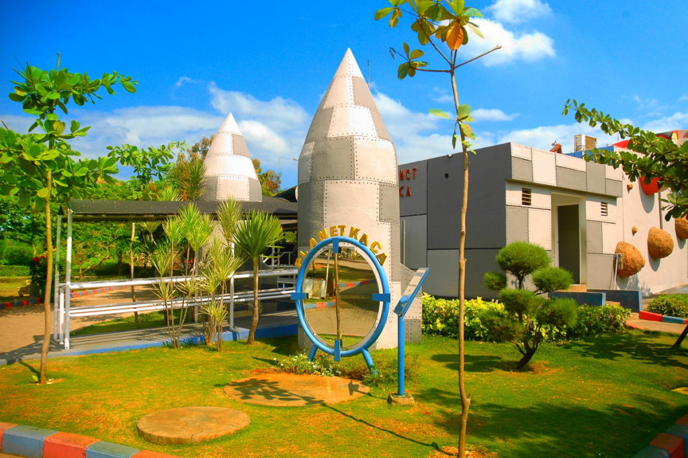
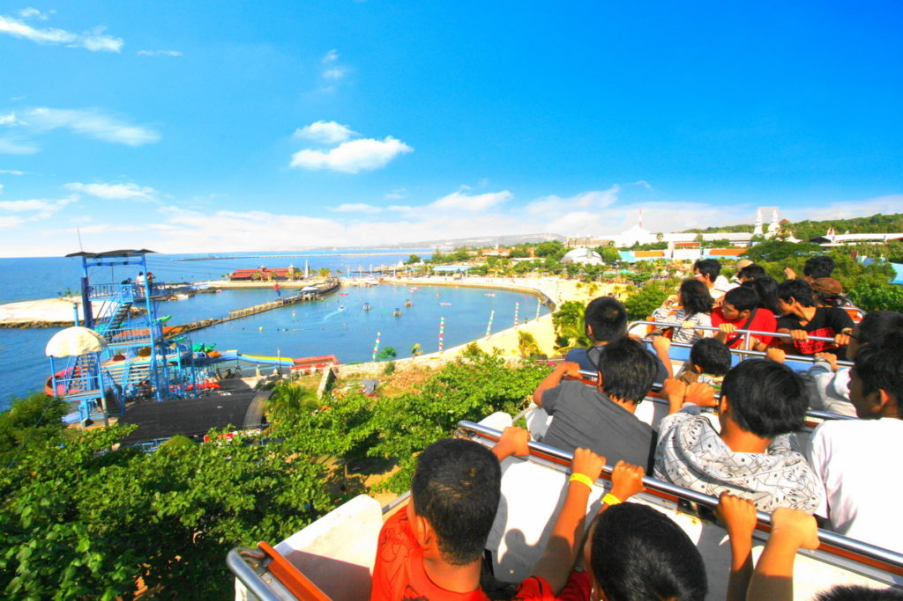
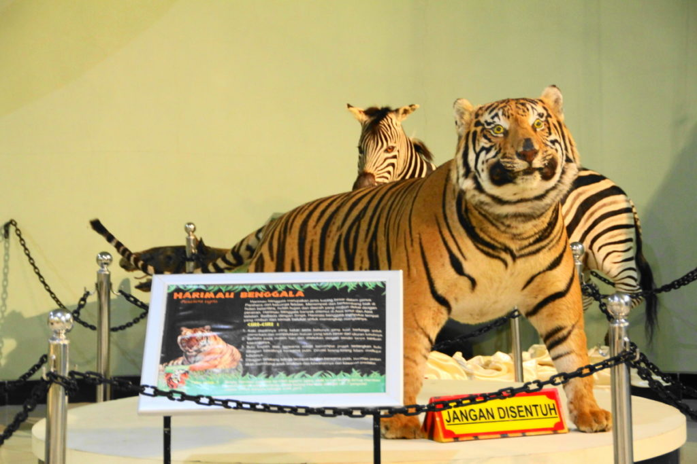
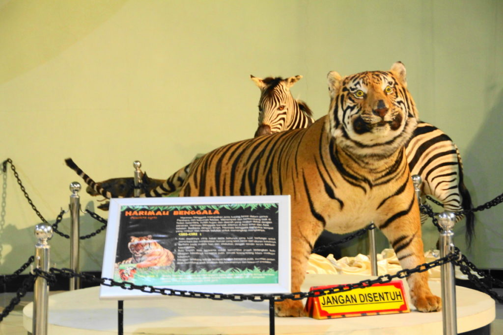

WBL atau singkatan dari Wisata Bahari Lamongan adalah sebuah destinasi yang penuh keindahan, tempat wisata ini berlokasi di wilayah Kecamatan Paciran, dikelilingi dengan pantainya yang indah , pemandangan yang luar biasa, juga fasilitas yang tidak kalah kerennya dengan yang biasa kita temui di televisi.
WISATA BAHARI LAMONGAN (WBL) Wisata Bahari Lamongan merupakan wisata yang terpopuler di Lamongan. Letaknya adalah di Jl. Raya Paciran, Paciran, Kec. Paciran, Kabupaten Lamongan, Jawa Timur. Wisata Bahari Lamongan ini diresmikan pada tanggal 14 November 2004 oleh H. Masyfuk yang ketika itu menjabat sebagai Bupati Lamongan. Wisatawan sangat direkomendasikan mengunjungi WBL. Sarana hiburan yang cocok bagi pasangan maupun keluarga dengan berbagai fasilitas, wahana, dan pemandangan pantai yang ditawarkan menambah nilai plus wisata ini. WBL selalu mengupdate wahana, fasilitas, dan system yang ada guna memanjakan dan mempermuda wisatawan. WBL juga satu komplek dengan Goa Maharani sehingga wisatawan dapat mengambil satu paket liburan keluarga atau hanya memilih salah satu.


 



 
